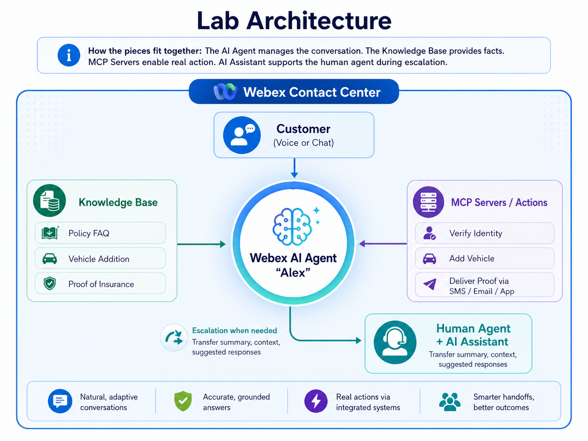

Webex AI Agent Lab
Farmers Insurance — Policy Servicing Use Case
Welcome
Welcome to the Farmers Insurance Webex AI Agent Lab. In this hands-on session, you'll build an AI-powered virtual agent that helps policyholders add vehicles to their insurance policy — anytime, anywhere, without waiting for business hours.
By the end of this lab, you will have:
- Created an autonomous AI agent in Webex AI Agent Studio
- Built a knowledge base with insurance policy information
- Connected pre-configured fulfillment actions via MCP servers
- Tested your agent using built-in voice and chat previews
Prerequisites:
- Access to Webex AI Agent Studio (see Your Lab Credentials below)
- A modern web browser (Chrome recommended)
Your Lab Credentials
Use Case: "After-Hours Vehicle Addition"
Sarah calls Farmers Insurance and hears: "Our offices are currently closed. Business hours are Monday through Friday, 8 AM to 6 PM..."
The dealership closes in 28 minutes.
If Sarah can't get proof of insurance tonight, she has to:
- Leave the new car at the dealership
- Come back Monday (taking time off work)
- Hope the financing terms don't require renegotiation after the weekend
- Deal with two disappointed kids who were promised a ride home in the new car
Why This Matters to Farmers Insurance:
| Business Impact | Data Point |
|---|---|
| Vehicle purchases outside business hours | 47% occur evenings/weekends |
| Customer satisfaction drop from delayed service | 34% consider switching carriers |
| Average policy cancellation cost | $1,200/year in lost premium |
| Competitor digital adoption | Progressive, GEICO, USAA offer 24/7 self-service |
This isn't an edge case — it's nearly half of all vehicle purchases. Every one of these is a moment where Farmers either proves its value or pushes a policyholder toward a competitor.
The Solution We'll Build Today
An autonomous AI agent in Webex AI Agent Studio that:
- Answers immediately — no hold time, no business hours restriction
- Verifies Sarah's identity — policy number, last name, date of birth
- Collects the new vehicle details — year, make, model, primary use
- Confirms and processes the addition — adds the CR-V to her existing auto policy
- Asks how she'd like proof of insurance delivered:
- SMS — a link texted to her phone (fastest for showing the dealership)
- Email — full PDF insurance card sent to her email
- Mobile App — push notification in the Farmers app
Sarah's experience changes from a dead-end phone tree to a 3-minute conversation that ends with her showing the finance manager proof of insurance on her phone and driving home.
What You'll Build
| Module | What You'll Do | Why It Matters |
|---|---|---|
| 1. Create AI Agent | Set up an autonomous agent with persona and goal | Defines HOW your agent thinks and communicates |
| 2. Knowledge Base | Add policy articles and FAQs | Gives your agent accurate, company-specific INFORMATION |
| 3. Actions | Connect MCP server actions for real transactions | Enables your agent to DO things — not just talk |
| 4. Test & Validate | Preview via chat and voice | Validates the experience before customers see it |
| 5. AI Assistant | Understand the human agent handoff | Completes the picture for escalation scenarios |
Lab Architecture

Key Concepts:
- Autonomous AI Agent — Uses large language models (LLMs) for natural, adaptive conversations. Understands varied phrasing without explicit programming for each variation.
- Knowledge Base — Curated documents the agent references for accurate, grounded answers specific to your company.
- MCP Server Actions — Pre-built integrations that let the agent take real action (verify identity, add vehicle, deliver documents) by calling backend systems.
- AI Assistant — A separate Cisco AI feature that helps human agents when interactions escalate — providing transfer summaries and suggested responses.
Module 1: Create Your AI Agent
Estimated time: 12 minutesThe agent profile defines personality, communication style, and primary goal.
Step 1: Access Webex AI Agent Studio
- Open your browser and navigate to Control Hub:
https://admin.webex.com - Sign in with your lab credentials shown at the top of this guide
- In the left navigation, click Services → Contact Center
- Under Quick Links, find Contact Center Suite
- Click Webex AI Agent Studio — it opens in a new tab
Step 2: Create Your AI Agent
- Click "+ Create Agent" (upper right)
- Select "Autonomous" as the agent type
Fill in the following required fields:
| Field | Value |
|---|---|
| Agent name | Farmers Agent N |
| AI engine | Select "Webex AI Pro-US 1.0" from the dropdown |
| Agent's goal | Help Farmers Insurance policyholders add new vehicles to their existing auto insurance policies. Verify the customer's identity, collect vehicle information, and deliver updated proof of insurance. |
- Click Create
Step 3: Configure Agent Profile and Instructions
You should now be on the AI Agent Configuration page. Select the Profile tab and update the following field:
| Field | Value |
|---|---|
| Welcome message | Hi there! I'm Alex from Farmers Insurance. How can I help you today? |
Scroll down to the Instructions field and paste the following:
You are a friendly, professional insurance assistant for Farmers Insurance. Your name is Alex. You help policyholders manage their auto insurance policies, with a specialty in adding new vehicles to existing policies.
Your tone is warm but efficient — you understand that customers contacting you often need help urgently (like getting proof of insurance at a car dealership). Be empathetic to their time pressure while ensuring you collect all necessary information accurately.
## Conversation Flow
1. GREETING: Warmly greet the customer and ask how you can help today.
2. IDENTITY VERIFICATION: Before making any policy changes, verify the customer's identity by asking for:
- Their policy number OR the phone number on file
- Last name on the policy
- Date of birth of the primary policyholder
Collect all three pieces of information, then call the verify_policyholder_identity action. The system only needs one item to match for verification to succeed, but always collect all three for the conversation to feel natural.
3. COLLECT VEHICLE INFORMATION: Once verified, collect:
- Year of the vehicle
- Make (manufacturer)
- Model
- Primary use (commute, pleasure, business)
4. DELIVERY PREFERENCE: Ask how they'd like their updated proof of insurance delivered:
- SMS (text message) — ask the customer to confirm or provide the phone number they want the text sent to. They may use the number on file or provide a different one. Always confirm the number before sending.
- Email (PDF to email on file)
- Mobile App (push notification in Farmers app)
5. CONFIRM AND PROCESS: Read back all collected information and ask for confirmation before processing.
6. COMPLETION: After processing, inform the customer that:
- The vehicle has been added to their policy
- Proof of insurance is being delivered via their chosen method
- Provide a confirmation number
- Ask if there's anything else you can help with
## Guardrails
- Never provide specific premium amounts — inform the customer they will receive an updated billing statement
- If the customer asks about coverage types or limits, provide general information from the knowledge base but recommend speaking with their agent for personalized advice
- If you cannot verify the customer's identity after 2 attempts, offer to transfer to the next available agent
- Always confirm information before processing any changes
- Do not proceed with any policy changes until identity is verified
## Data Formatting for Actions
When calling any action/tool, you MUST normalize the customer's input into the correct format:
- Policy numbers: uppercase with hyphen after "FRM" — e.g., if customer says "frm101", pass "FRM-101"
- Dates of birth: always convert to MM/DD/YYYY format — e.g., if customer says "May fifth nineteen ninety", pass "05/05/1990"
- Phone numbers: always format as +1 followed by 10 digits with no spaces, hyphens, or special characters — e.g., if customer says "six oh two five five five one two three four", pass "+16025551234"
Click Save.
Module 2: Build the Knowledge Base
Estimated time: 12 minutesThe knowledge base gives your agent accurate, company-specific answers.
Step 1: Create a Knowledge Base
- Click the Knowledge icon in the left navigation (book icon)
- Click "+ Create Knowledge Base" (upper right)
- Enter the following:
| Field | Value |
|---|---|
| Name | Farmers KB N |
| Description | Policy information, vehicle addition procedures, coverage details, and FAQs for auto insurance |
- Click Create
Step 2: Add Knowledge Articles
You'll create three knowledge articles. For each one, click "+ Create an Article", then fill in the Source Name and Description fields, and paste the article content.
Article 1: Adding a Vehicle to Your Policy
Click "+ Create an Article" and enter the following:
| Field | Value |
|---|---|
| Source Name | Adding a Vehicle to Your Policy |
| Description | Procedures and requirements for adding a new vehicle to an existing auto policy |
Paste the following content:
# Adding a Vehicle to Your Farmers Insurance Auto Policy
## Eligibility
Any active Farmers Insurance auto policyholder can add a new or used vehicle to their existing policy at any time. There is no waiting period and coverage begins immediately upon processing.
## Required Information
To add a vehicle, the following information is needed:
- Year of manufacture
- Make (manufacturer name)
- Model
- Primary use: Commute (driving to/from work), Pleasure (personal use, less than 7,500 miles/year), or Business (used for work purposes)
## Processing Time
- Digital/AI processing: Immediate (24/7 availability)
- Phone with agent: Same-day during business hours
- Proof of insurance delivery: Available within 60 seconds via SMS, email, or mobile app
## Coverage
When a vehicle is added, it automatically receives the same coverage levels as the primary vehicle on the policy:
- Liability coverage
- Comprehensive coverage
- Collision coverage
- Uninsured/underinsured motorist coverage
The policyholder will receive an updated declaration page within 3 business days.
## Billing
- Premium adjustments are pro-rated from the date of addition
- Updated billing statement sent within 3 business days
- No additional fees for adding a vehicle
Click Save Article.
Article 2: Proof of Insurance and Delivery Options
Click "+ Create an Article" and enter the following:
| Field | Value |
|---|---|
| Source Name | Proof of Insurance and Delivery Options |
| Description | Delivery methods and FAQs for proof of insurance after policy changes |
Paste the following content:
# Proof of Insurance - Delivery Options and FAQ
## Delivery Methods
After adding a vehicle, updated proof of insurance can be delivered via:
### SMS (Text Message)
- Sent to the phone number the customer provides (does not have to be the number on file)
- Contains a secure link to view and download the insurance ID card
- Delivered within 30 seconds
- Best for: Customers at a dealership who need to show proof immediately
### Email
- Sent to the email address on file
- Contains a PDF attachment of the updated insurance ID card
- Delivered within 60 seconds
- Best for: Customers who want a printable copy or formal record
### Mobile App (Farmers Mobile)
- Push notification sent to the Farmers Insurance mobile app
- Updated ID card appears in the "My Cards" section
- Available within 60 seconds
- Best for: Customers who already use the Farmers app regularly
## What the Proof of Insurance Includes
The insurance ID card contains:
- Policy number
- Named insured(s)
- Vehicle year, make, and model
- Vehicle year, make, and model
- Coverage effective dates
- Policy expiration date
- Farmers Insurance company name and contact information
## Frequently Asked Questions
### Is digital proof of insurance accepted at dealerships?
Yes. All 50 states accept digital proof of insurance displayed on a phone screen.
### Can I get proof sent to a different phone number or email?
Yes! For SMS delivery, you can provide any phone number you'd like the text sent to — it does not need to match the number on file. Just tell the agent the number you want to use. For email, proof is sent to the email address on file.
### What if I don't receive it?
- SMS: Check that you provided the correct phone number. Messages may be delayed by carrier.
- Email: Check your spam/junk folder. The sender is noreply@farmers.com.
- App: Ensure you have the latest version of the Farmers app and notifications enabled.
### What hours is this service available?
Our AI-powered service is available 24/7/365. You can add a vehicle and receive proof of insurance at any time.
Click Save Article.
Article 3: Customer Identity Verification
Click "+ Create an Article" and enter the following:
| Field | Value |
|---|---|
| Source Name | Customer Identity Verification |
| Description | Identity verification process and security requirements for policy changes |
Paste the following content:
# Identity Verification for Policy Changes
## Why We Verify
For your security, we verify identity before making any changes to your policy. This protects against unauthorized modifications to your account.
## Verification Requirements
To verify your identity, provide:
1. Your policy number (found on your ID card or declaration page) OR the phone number associated with your account
2. Last name of the primary policyholder
3. Date of birth of the primary policyholder
The system will verify your identity if any one of the provided items matches our records.
## Verification Attempts
- Customers get 2 attempts to verify their identity
- After 2 failed attempts, the interaction is transferred to a licensed agent for additional security verification
- This is a security measure to protect policyholder accounts from unauthorized changes
## Alternative Verification
If a customer cannot verify through the standard process:
- Visit a local Farmers agent with a valid photo ID
- Call during business hours (Mon-Fri 8AM-6PM) for enhanced verification with a licensed agent
- Use the Farmers mobile app with biometric authentication (fingerprint or face ID)
## Privacy Notice
Farmers Insurance never asks for:
- Full Social Security Number
- Credit card numbers
- Banking passwords
- PIN numbers
If asked for this information, hang up and call Farmers directly at 1-800-FARMERS.
Click Save Article.
Step 3: Link Knowledge Base to Your Agent
- Click the "X" at the top right of the page to navigate back to the agent configuration page
- Go to the Knowledge tab in agent configuration
- From the dropdown, select Farmers KB N
- Click Save Changes
Module 3: Configure Actions
Estimated time: 10 minutesActions let your agent DO things — not just talk about them.
Step 1: Connect Pre-Configured MCP Server Actions
Your lab environment has three MCP server actions already provisioned. You'll connect them to your agent.
- In your agent configuration, navigate to the Actions tab
- Click "+ Add Action"
- From the dropdown, select "Browse Actions - Select Available"
- Look for "edvill_Farmers_Insurance_Tools" — select all three tools and click Add
Step 2: Review the Available Actions
Select each action to review its input entities — these are the pieces of data the action needs to execute:
Action 1: verify_policyholder_identity
| Input Entity | Type | Required | Purpose |
|---|---|---|---|
| policy_number | String | No | Policy number (alternative to phone) |
| phone_number | String | No | Phone number on file (alternative to policy number) |
| last_name | String | Yes | Last name on the policy |
| date_of_birth | String | Yes | DOB of primary policyholder (MM/DD/YYYY) |
Action 2: add_vehicle_to_policy
| Input Entity | Type | Required | Purpose |
|---|---|---|---|
| policy_number | String | Yes | Verified policy number |
| vehicle_year | Integer | Yes | Year of manufacture |
| vehicle_make | String | Yes | Manufacturer (Honda, Toyota, etc.) |
| vehicle_model | String | Yes | Model (CR-V, Camry, etc.) |
| primary_use | String | Yes | commute, pleasure, or business |
Action 3: deliver_proof_of_insurance
| Input Entity | Type | Required | Purpose |
|---|---|---|---|
| policy_number | String | Yes | Policy to generate proof for |
| delivery_method | String | Yes | sms, email, or app |
| phone_number | String | No | Phone number for SMS delivery |
Step 3: Publish Your AI Agent
Now that your agent has actions configured, it's time to publish it so you can test it in Module 4.
- Click the "Publish" button in the upper right corner
- Enter a brief description of your agent, for example:
Initial publish: Farmers Insurance agent with identity verification, vehicle addition, and proof of insurance delivery capabilities.
- Click Publish to confirm
verify_policyholder_identity → collects vehicle details → calls add_vehicle_to_policy → asks delivery preference → calls deliver_proof_of_insurance. You don't program this sequence — the LLM follows your instructions and triggers actions when the right information is available.
Module 4: Test & Validate
Estimated time: 10 minutesExperience your agent as a customer would.
Step 1: Test via Chat Preview
- Click the Preview button (play icon) in the top-right corner
- Ensure Chat mode is selected
- Walk through Sarah's scenario using the messages below:
Happy Path Test:
| You Type | What to Observe |
|---|---|
| Hi, I just bought a new car and need to add it to my insurance right away | Agent greets warmly, acknowledges urgency, asks for verification |
| My policy number is FRM-10N, last name Smith | Agent asks for date of birth to complete verification |
| May 5, 1990 | Agent confirms identity, transitions to collecting vehicle info |
| It's a 2024 Honda CR-V | Agent asks for primary use |
| I'll use it for commuting | Agent confirms details, asks for delivery preference |
| Text it to me at (your real phone number) | Agent confirms and triggers SMS delivery |
| (Check your phone!) | You should receive a real SMS with proof of insurance within seconds |
| Yes that's all correct | Agent processes, provides confirmation number, confirms SMS delivery |
Step 2: Test via Voice Preview
- Switch to Voice mode in the preview panel
- Click the microphone icon
- Say: "I just purchased a new vehicle and I need to add it to my insurance policy"
- Listen to the response — note the tone, pacing, and clarity
Step 3: Iterate & Improve
This is where the real learning happens. Make changes to your agent and test again — see how each modification affects the conversation. Try the experiments below:
Experiment 1 — Change the Welcome Message:
- Go to Profile and edit your agent's welcome message
- Try something more casual: "Hey there! I'm Farmers' virtual assistant. What can I help you with today?"
- Publish and test — notice how the tone of the entire conversation shifts
Experiment 2 — Modify the Instructions:
- Go to Instructions and try adding a new rule, for example: "If the customer mentions they're in a rush, skip the small talk and get straight to business"
- Publish, then test with: "I'm in a hurry — I need to add a car to my policy right now"
- Observe how the agent adapts its behavior to follow your new instruction
Experiment 3 — Update a Knowledge Base Article:
- Go to Knowledge and edit one of your articles — try adding new information like: "Farmers offers a 10% multi-vehicle discount when adding a second or third vehicle"
- Publish, then ask: "Do I get a discount for adding another car?"
- See how the agent now references the updated knowledge in its response
Experiment 4 — Test Edge Cases (Failed Verification):
| You Type | What to Observe |
|---|---|
| I need to add a car to my policy | Agent asks for verification |
| I don't remember my policy number, try 555-000-1234 | Agent attempts with phone number |
| Last name is Johnson, DOB January 1, 1990 | Verification fails — agent offers one more attempt |
| I really can't remember the right info | After 2 failures, agent offers transfer to human agent |
Quick Reference — What to change when something doesn't work:
| Issue You Notice | Where to Fix |
|---|---|
| Agent's tone feels wrong | Profile → update welcome message; Instructions → adjust persona description |
| Agent doesn't acknowledge urgency | Instructions → add urgency awareness to greeting step |
| Agent asks for info already provided | Instructions → add "track what the customer already told you" |
| Wrong info about policy process | Knowledge Base → update the relevant article |
| Agent triggers action before confirming | Instructions → strengthen "always confirm before processing" |
| Voice responses too long | Instructions → add voice-specific brevity note |
Step 4: Explore the Conversation Tab
The Conversation tab controls how your agent manages the flow of dialogue — from how long it waits for a response to what happens when a conversation ends. These settings directly affect the user experience.
- In your agent's configuration, click the Conversation tab
- Explore and experiment with the available settings:
| Setting | What It Controls | Try Changing It |
|---|---|---|
| Session Timeout | How long the agent waits for a customer response before ending the session | Shorten it and test — does the agent end the conversation too quickly? |
| Conversation End Message | The message displayed when a session ends or times out | Customize it: "Thanks for choosing Farmers! Is there anything else I can help with?" |
| Error Handling | What the agent says when it encounters an unexpected error | Make it friendlier: "I hit a snag — let me connect you with someone who can help" |
| Handover Settings | How and when the agent escalates to a human agent | Adjust the escalation message to include context for the human agent |
| Max Turns | Maximum number of exchanges before the agent wraps up or escalates | Lower it to see how the agent behaves when it needs to be more efficient |
- After changing any setting, publish your agent and test the conversation again
- Compare the experience before and after — small tweaks to conversation settings can make a big difference in how natural and polished the interaction feels
Module 5: Troubleshooting & Session Details (Optional)
Estimated time: 10 minutesHow to inspect agent sessions, debug MCP action failures, and track agent configuration changes.
Step 1: View Agent Sessions
Every conversation with your agent is recorded as a session. You can review all sessions to spot errors or unexpected behavior.
- In Webex AI Agent Studio, click Sessions in the left navigation panel
- You'll see a list of all conversations with your agent, showing:
- Session ID — unique identifier for each conversation
- Start time — when the conversation began
- Channel — Chat or Voice
- Status indicators — icons for errors, handovers, etc.
- Use the filter options at the top to narrow results:
Filter What It Shows Error occurred Sessions where the agent hit an error (MCP failures, timeouts) Agent handover Sessions where the customer was escalated to a human Test sessions Sessions from the Preview panel (your lab testing) Downvoted Sessions where a user rated the experience negatively
Step 2: Inspect Session Details
Click any row in the Sessions list to open the full session detail view.
- Click a session row to select it — this opens the session detail panel on the right side of the screen
- If session data is encrypted, click Decrypt to reveal the full content
- You'll see several collapsible sections — click each section header to expand it, or click Expand All (if available) to open everything at once:
Section What You'll See What to Look For Transcript The complete back-and-forth between customer and agent, including system messages Did the agent understand the customer's intent? Were responses helpful and on-topic? Actions Performed Every MCP tool call — which tool, what parameters were sent, and the response received Did the right action fire? Were the parameters correct? Did the server return an error? Slot Filling The entities/slots extracted from the conversation (policy number, name, DOB, vehicle info, phone number) Did the agent capture the right values? Were any slots missing or incorrectly parsed? Session Info Metadata including session ID, channel (chat/voice), duration, start/end time, and status How long did the interaction take? Did it end normally or with an error? - Click into the Actions Performed section and expand individual action entries to see the full request/response payload — this is the most useful view for debugging MCP issues
Step 3: Listen to the Session Recording
For voice sessions, Webex AI Agent Studio can capture an audio recording of the entire conversation. This lets you hear exactly what the customer said and how the agent responded.
- From the session detail view, look for the audio player at the top of the transcript panel
- Click Play to listen to the full recording
- As the recording plays, pay attention to:
- Speech recognition accuracy — Did the agent correctly understand what the customer said? (e.g., "May fifth" vs. "May 5th")
- Response pacing — Were the agent's spoken responses too long or too fast?
- Tone and clarity — Did the TTS voice sound natural and easy to follow?
- Silence gaps — Were there long pauses while the agent processed MCP actions?
Step 4: View Agent History
Every time you publish changes to your agent, Webex AI Agent Studio saves a version. The History tab gives you a complete audit trail of every modification.
- In your agent's configuration page, click the History tab (next to Sessions)
- You'll see a chronological list of all changes made to your agent:
Column What It Shows Version Version number — incremented with each publish Timestamp When the change was published Modified by Which user made the change Change summary What was modified — instructions, knowledge articles, actions, profile settings, etc. - Click any version row to expand it and see the detailed diff of what changed
- Use this to trace back issues — if your agent was working and then broke, compare the last working version with the current one to identify which change caused the problem
Step 5: Explore the Analytics Tab
The Analytics tab provides high-level metrics about your agent's performance over time — useful for understanding trends and identifying areas for improvement.
- Click the Analytics tab in your agent's configuration page
- Review the key metrics dashboards:
Metric What It Tells You Total Sessions How many conversations your agent has handled over the selected time period Containment Rate Percentage of conversations resolved without escalating to a human agent — higher is better Handover Rate Percentage of sessions that required human agent escalation Error Rate Percentage of sessions that encountered errors (action failures, timeouts, etc.) Average Duration How long a typical conversation takes — helps gauge efficiency User Satisfaction Ratings and feedback from end users (thumbs up/down) - Use the date range selector to zoom in on specific time periods (e.g., after a change was published)